토목산업기사 (2017-09-23 기출문제)
1과목: 응용역학
1. 트러스 해법상의 가정에 대한 설명으로 틀린 것은?
- 모든 부재는 직선이다.
- 모든 부재는 마찰이 없는 핀으로 양단이 연결되어있다.
- 외력의 작용선은 트러스와 동일 평면 내에 있다.
- 집중하중은 절점에 작용시키고, 분포하중은 부재 전체에 분포한다.
(정답률: 56%)

2. 다음 중 부정정구조물의 해석방법이 아닌 것은?
- 처짐각법
- 단위하중법
- 3연 모멘트법
- 모멘트 분배법
(정답률: 45%)
3. 양단이 고정되어 있는 길이 10m의 강(鋼)이 15℃에서 40℃로 온도가 상승할 때 응력은? (단, E=2.1×106kg/cm2, 선팽창계수 α=0.00001/℃)
- 475kg/cm2
- 500kg/cm2
- 525kg/cm2
- 538kg/cm2
(정답률: 67%)
4. 반지름 R, 길이 ℓ인 원형단면 기둥의 세장비는?
- ℓ/2R
- ℓ/R
- 2ℓ/R
- 3ℓ/R
(정답률: 56%)
5. 직사각형 단면인 단순보의 단면계수가 2000m3이고, 200000tㆍm의 휨모멘트가 작용할 때 이 보의 최대휨응력은?
- 50t/m2
- 70t/m2
- 85t/m2
- 100t/m2
(정답률: 73%)
6. 아래의 표에서 설명하는 것은?
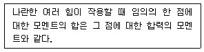
- 바리농의 정리
- 베티의 정리
- 중첩의 원리
- 모어원의 정리
(정답률: 82%)
7. 다음 그림과 같은 구조물의 부정정 차수는?
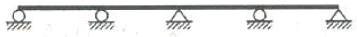
- 1차부정정
- 3차부정정
- 4차부정정
- 6차부정정
(정답률: 56%)
8. 반지름이 r인 원형단면의 단주에서 도심에서의 핵거리 e는?
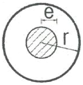
- r/2
- r/4
- r/6
- r/8
(정답률: 70%)
9. 다음 그림과 캔틸레버보에서 최대 휨모멘트는 얼마인가?
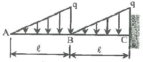
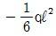
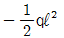
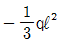
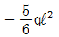
(정답률: 61%)
10. “탄성체가 가지고 있는 탄성변형 에너지를 작용하고 있는 하중으로 편미분하면 그 하중점에서의 작용방향의 변위가 된다”는 것은 어떤 이론인가?
- 맥스웰(Maxwell)의 상반정리이다.
- 모아(Mohr)의 모멘트-면적정리이다.
- 카스틸리아노(Castigliano)의 제2정리이다.
- 클래페이론(Clapeyron)의 3연 모멘트법이다.
(정답률: 62%)
11. 아래 그림과 같이 60°의 각도를 이루는 두 힘 P1, P2가 작용할 때 합력 R 의 크기는?
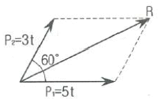
- 7t
- 8t
- 9t
- 10t
(정답률: 67%)
12. 보의 중앙에 집중하중을 받는 단순보에서 최대처짐에 대한 설명으로 틀린 것은? (단, 폭 b, 높이 h로한다.)
- 탄성계수 E에 반비례한다.
- 단면의 높이 h의 3제곱에 반비례한다.
- 지간 ℓ의 제곱에 반비례한다.
- 단면의 폭 b에 반비례한다.
(정답률: 70%)
13. 그림과 같은 길이가 ℓ인 캔틸레버보에서 최대 처짐각은?
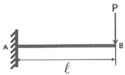
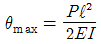
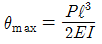
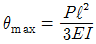
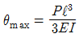
(정답률: 44%)
14. 다음 중 단면 1차 모멘트와 같은 차원을 갖는 것은?
- 단면 2차 모멘트
- 회전반경
- 단면 상승 모멘트
- 단면계수
(정답률: 66%)
15. 그림과 같은 3-hinge 라멘의 수평반력 HA값은?
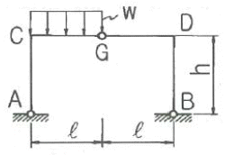
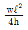
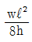
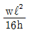
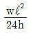
(정답률: 43%)
16. 그림과 같은 게르버보의 C점에서 휨모멘트 값은?
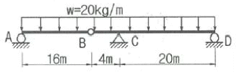
- -640kgㆍm
- -800kgㆍm
- -960kgㆍm
- -1440kgㆍm
(정답률: 57%)
17. 다음 그림과 같은 구조물에서 지점 A에서의 수직반력의 크기는?
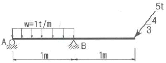
- 2t
- 2.5t
- 3t
- 3.5t
(정답률: 53%)
18. 단면적 10cm2인 원형단면의 봉이 2t의 인장력을 받을 때 변형률(ε)은? (단, 탄성계수(E)=2×106kg/cm2)
- 0.0001
- 0.0002
- 0.0003
- 0.0004
(정답률: 59%)
19. 다음 그림과 같은 단순보의 중앙에 집중하중이 작용할 때 단면에 생기는 최대 전단응력은 얼마인가?
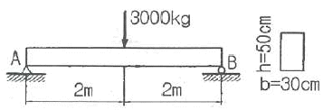
- 1.0kg/cm2
- 1.5kg/cm2
- 2.0kg/cm2
- 2.5kg/cm2
(정답률: 67%)
20. 그림에서 음영된 삼각형 단면의 X축에 대한 단면2차 모멘트는 얼마인가?
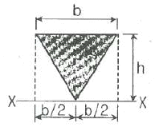
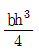
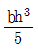
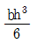
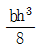
(정답률: 61%)
2과목: 측량학
21. 등고선의 특성에 대한 설명으로 틀린 것은?
- 등고선은 분수선과 직교하고 계곡선과는 평행하다.
- 동굴이나 절벽에서는 교차할 수 있다.
- 동일 등고선 상의 모든 점은 표고가 같다.
- 등고선은 도면 내외에서 폐합하는 폐곡선이다.
(정답률: 54%)
22. 수준측량에 관한 설명으로 옳지 않은 것은?
- 전·후시의 표척간 거리는 등거리로 하는 것이 좋다.
- 왕복관측을 대신하여 2대의 기계로 동일 표척을 관측하는 것이 좋다.
- 왕복관측 도중에 관측자를 바꾸지 않는 것이 좋다.
- 표척을 앞뒤로 서서히 움직여 최소 눈금을 읽는 것이 좋다.
(정답률: 62%)
23. 토적곡선(mass curve)을 작성하는 목적으로 옳지 않은 것은?
- 토량의 운반거리 산출
- 토공기계 선정
- 토량의 배분
- 중심선 설치
(정답률: 62%)
24. 삼각측량을 통해 단일삼각망의 내각을 측정하여 다음과 같은 각을 얻었다. 각 내각의 최확값은?
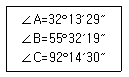
- ∠A=32°13′24˝, ∠B=55°32′12˝, ∠C=92°14′24˝
- ∠A=32°13′23˝, ∠B=55°32′12˝, ∠C=92°14′25˝
- ∠A=32°13′23˝, ∠B=55°32′13˝, ∠C=92°14′24˝
- ∠A=32°13′24˝, ∠B=55°32′13˝, ∠C=92°14′23˝
(정답률: 68%)
25. 축척 1:50,000 지형도에서 A점에서 B점까지의 도상거리가 50mm이고, A점의 표고가 200m, B점의 표고가 10m라고 할 때, 이 사면의 경사는?
- 1/18.4
- 1/20.5
- 1/22.3
- 1/13.2
(정답률: 46%)
26. 교점(I.P)는 도로의 기점에서 187.94m의 위치에 있고 곡선반지름 250m, 교각 43˚57´20˝인 단곡선의 접선길이는?
- 87.046m
- 100.894m
- 288.834m
- 350.447m
(정답률: 51%)
27. 노선의 완화곡선으로써 3차 포물선이 주로 사용되는 곳은?
- 고속도로
- 일반철도
- 시가지전철
- 일반도로
(정답률: 72%)
28. 터널 양 끝단의 기준점 A, B를 포함해서 트래버스 측량 및 수준측량을 실시한 결과가 아래와 같을 때, AB간의 경사거리는?
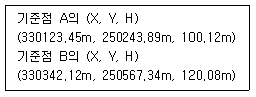
- 290.94m
- 390.94m
- 490.94m
- 590.94m
(정답률: 57%)
29. 장애물로 인하여 P, Q점에서 관측이 불가능하여 간접측량한 결과 AB=225.85m이었다면 이때 PQ의 거리는? (단, ∠PAB=79°36´, ∠QAB=35°31´, ∠PBA=34°17´, ∠QBA=82°⑤´)
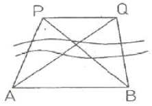
- 179.46m
- 177.98m
- 178.65m
- 180.61m
(정답률: 36%)
30. B.M.에서 P점까지의 고저를 관측하는데 10km인 A코스, 12km인 B코스로 각각 수준측량 하여 A코스의 결과 표고는 62.324m, B코스의 결과 표고는 62.341m이었다. P점 표고의 최확값은?
- 62.341m
- 62.338m
- 62.332m
- 62.324m
(정답률: 64%)
31. 동일한 구역을 같은 카메라로 촬영할 때 비행고도를 1,000m에서 2,000m로 높인다고 가정하면 1,000m 촬영에서 100장의 사진이 필요하다고 할 때, 2,000m 촬영에서 필요한 사진은 약 몇 장인가?
- 400장
- 200장
- 50장
- 25장
(정답률: 55%)
32. 지오이드에 대한 설명으로 옳은 것은?
- 육지 및 해저의 굴곡을 평균값으로 정한 면이다.
- 평균해수면을 육지내부까지 연장했을 때의 가상적인 곡면이다.
- 육지와 해양의 지평면을 말한다.
- 회전타원체와 같은 것으로 지구형상이 되는 곡면이다.
(정답률: 67%)
33. 도로의 노선측량에서 종단면도에 나타나지 않는 항목은?
- 각 관측점에서의 계획고
- 각 관측점의 기점으로부터의 누적거리
- 지반고와 계획고에 대한 성토, 절토량
- 각 관측점의 지반고
(정답률: 61%)
34. 하천측량을 실기할 경우 수애선의 기준이 되는 것은?
- 고수위
- 평수위
- 갈수위
- 홍수위
(정답률: 80%)
35. 시간과 경비가 많이 들고 조건식수가 많아 조정이 복잡하지만 정확도가 높은 삼각망은?
- 단열 삼각망
- 유심 삼각망
- 사변형 삼각망
- 단 삼각형
(정답률: 78%)
36. 유속 측량 장소의 선정 시 고려하여야 할 사항으로 옳지 않은 것은?
- 가급적 수위의 변화가 뚜렷한 곳이어야 한다.
- 직류부로서 흐름과 하상경사가 일정하여야 한다.
- 수위 변화에 횡단 형상이 급변하지 않아야 한다.
- 관측 장소의 상·하류의 유로가 일정한 단면을 갖고 있으며 관측이 편리하여야 한다.
(정답률: 68%)
37. 도로와 철도의 노선 선정 시 고려해야 할 사항에 대한 설명으로 옳지 않은 것은?
- 성토를 절토보다 많게 해야 한다.
- 가급적 급경사 노선은 피하는 것이 좋다.
- 기존 시설물의 이전비용 등을 고려한다.
- 건설비·유지비가 적게 드는 노선이어야 한다.
(정답률: 63%)
38. 초점길이 150mm인 카메라로 촬영고도 3,000m에서 촬영하였다. 이때의 촬영기선길이가 1,920m이라면 종중복도는? (단, 사진의 크기는 23cm×23cm)
- 50%
- 58%
- 60%
- 65%
(정답률: 50%)
39. 그림과 같은 지역의 면적은?
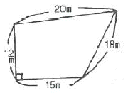
- 246.5m2
- 268.4m2
- 275.2m2
- 288.9m2
(정답률: 59%)
40. 1회 관측에서 ±3mm의 우연오차가 발생하였다. 10회 관측하였을 때의 우연오차는?
- ±3.3mm
- ±0.3mm
- ±9.5mm
- ±30.2mm
(정답률: 53%)
3과목: 수리학
41. 초속 VO의 사출수가 도달하는 수평 최대 거리는?
- 최대 연직높이의 1.2배이다.
- 최대 연직높이의 1.5배이다.
- 최대 연직높이의 2.0배이다.
- 최대 연직높이의 3.0배이다.
(정답률: 47%)
42. 지하대수층에서의 지하수 흐름에 대하여 Darcy법칙을 적용하기 위한 가정으로 옳지 않은 것은?
- 수식의 속도는 지하대수층 내의 실제 흐름속도를 의미한다.
- 다공층을 구성하고 있는 물질의 특성이 균일하고 동질이라 가정한다.
- 지하수 흐름이 정상류이며 또한 층류로 가정한다.
- 대수층 내에 모관수대가 존재하지 않는다고 가정한다.
(정답률: 27%)
43. 다음 설명 중 옳지 않은 것은?
- 유선이란 임의 순간에 각 점의 속도벡터에 접하는 곡선이다.
- 유관이란 개방된 곡선을 통과하는 유선으로 이루어진 평면을 말한다.
- 흐름이 층류일 때 뉴턴의 점성법칙을 적용할 수 있다.
- 정상류란 한 점에서 흐름의 특성이 시간에 따라 변하지 않는 흐름이다.
(정답률: 55%)
44. 그림과 같이 단면적 A1, A2인 두 관이 연결되어 있고 관내 두 점의 수두차가 H일 때 유량을 계산하는 식은?
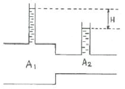
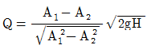
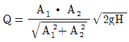
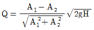
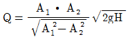
(정답률: 58%)
45. 관망의 유량을 계산하는 방법인 Hardy-Cross의 방법에서 가정조건이 아닌 것은?
- 분기점에서 유입하는 유량은 그 점에서 정지하지 않고 전부 유출한다.
- 각 폐합관에서 시계방향 또는 반시계방향으로 흐르는 관로의 손실수두의 합은 0이다.
- 합류점에 유입하는 유량은 그 점에서 정지하지 않고 전부 유출한다.
- 보정유량 △Q는 크기와 상관없이 균등하게 배분하여 유량을 결정한다.
(정답률: 50%)
46. 동수경사선(hydraulic grade line)에 대한 설명으로 옳은 것은?
- 위치수두를 연결한 선이다.
- 속도수두와 위치수두를 합해 연결한 선이다.
- 압력수두와 위치수두를 합해 연결한 선이다.
- 전수두를 연결한 선이다.
(정답률: 68%)
47. 길이 130m인 관로에서 양단의 압력수두차가 8m가 되도록 하고 0.3m3/s의 물을 송수하기 위한 관의 직경은? (단, 관로의 마찰손실계수는 0.03이다.)
- 43.0cm
- 32.5cm
- 30.3cm
- 25.4cm
(정답률: 47%)
48. 그림과 같은 수중 오리피스에서 오리피스 단면적이 30cm2일 때 유출량은? (단, 유량계수 C=0.6)
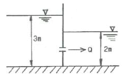
- 13.7L/s
- 12.5L/s
- 10.2L/s
- 8.0L/s
(정답률: 60%)
49. 물의 점성계수(coefficient of viscosity)에 대한 설명 중 옳은 것은?
- 수온에는 관계없이 점성계수는 일정하다.
- 점성계수와 동점성계수는 반비례한다.
- 수온이 낮을수록 점성계수는 크다.
- 4℃에서의 점성계수가 가장 크다.
(정답률: 60%)
50. 한계류에 대한 설명으로 옳은 것은?
- 유속의 허용한계를 초과하는 흐름
- 유속과 장파의 전파속도의 크기가 동일한 흐름
- 유속이 빠르고 수심이 작은 흐름
- 동압력이 정압력보다 큰 흐름
(정답률: 54%)
51. 다음 중 차원이 있는 것은?
- 조도계수 n
- 동수경사 I
- 상대조도 e/D
- 마찰손실계수 f
(정답률: 65%)
52. 유체 내부 임의의 점 (x, y, z )에서의 시간 t에 대한 속도성분을 각각 u, v, w로 표시할 때, 정류이며 비압축성인 유체에 대한 연속방정식으로 옳은 것은? (단, ρ는 유체의 밀도이다.)
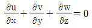
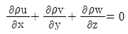
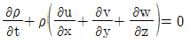
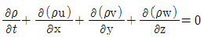
(정답률: 67%)
53. 원형 관수로의 흐름에서 레이놀즈수(Re)를 유량 Q, 지름 d 및 동점성계수 v의 함수로 표시한 것으로 옳은 것은?
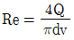
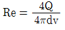
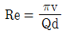
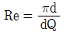
(정답률: 63%)
54. 개수로의 흐름에서 등류의 흐름일 때 옳은 것은?
- 유속은 점점 빨라진다.
- 유속은 점점 늦어진다.
- 유속은 일정하게 유지된다.
- 유속은 0이다.
(정답률: 69%)
55. 투수계수가 0.1cm/s이고 지하수위의 동수경사가 1/10인 지하수 흐름의 속도는?
- 0.0⑤cm/s
- 0.01cm/s
- 0.5cm/s
- 1cm/s
(정답률: 69%)
56. 오리피스에서 유출되는 실제유량을 계산하기 위한 수축계수 Ca로 옳은 것은? (단, a0 : 수축단면의 단면적, a : 오리피스의 단면적, V : 실제유속, V0: 이론유속)
- a/a0
- V0
- a0/a
- V/V0
(정답률: 58%)
57. 부체(浮體)가 불안정해지는 조건에 대한 설명으로 옳은 것은?
- 부양면에 대한 단면1차 모멘트가 클수록
- 부양면에 대한 단면1차 모멘트가 작을수록
- 부양면에 대한 단면2차 모멘트가 클수록
- 부양면에 대한 단면2차 모멘트가 작을수록
(정답률: 40%)
58. 콘크리트 직사각형 수로 폭이 8m, 수심이 6m일 때 Chezy의 공식에서 유속계수(C)의 값은? (단, Manning의 조도계수 n=0.014이다.)
- 79
- 83
- 87
- 92
(정답률: 54%)
59. 수압 98kPa(1kg/cm2)을 압력수두로 환산한 값으로 옳은 것은?
- 1m
- 10m
- 100m
- 1000m
(정답률: 53%)
60. 개수로의 수면기울기가 1/1200이고, 경심 0.85m, Chezy의 유속계수 56일 때 평균유속은?
- 1.19m/s
- 1.29m/s
- 1.39m/s
- 1.49m/s
(정답률: 55%)
4과목: 철근콘크리트 및 강구조
61. 다음 중 프리스트레스 감소의 원인으로 거리가 먼것은?
- 콘크리트의 건조 수축과 크리프
- 콘크리트의 탄성변형
- PS강재의 릴랙세이션
- PS강재의 항복점 강도
(정답률: 50%)
62. 그림과 같은 인장을 받는 표준 갈고리에서 정착길이란 어느 것을 말하는가?
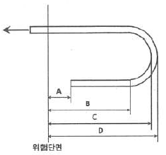
- A
- B
- C
- D
(정답률: 64%)
63. 보의 단면이 300×500mm인 직사각형이고, 1개당 100mm2의 단면적을 가지는 PS 강선 6개를 강선군의 도심과 부재단면의 도심축이 일치하도록 배치된 프리텐션 PC 보가 있다. 강선의 초기 긴장력이 1000MPa일 때 콘크리트의 탄성변형에 의한 프리스트레스의 감소량은? (단, n=6)
- 42MPa
- 36MPa
- 30MPa
- 24MPa
(정답률: 52%)
64. 강도설계법에서 휨모멘트 또는 휨모멘트와 축력을 동시에 받는 부재의 콘크리트 압축연단의 극한변형률은 얼마로 가정하는가?
- 0.001
- 0.002
- 0.003
- 0.004
(정답률: 75%)
65. 보에 작용하는 계수 전단력 Vu=50kN을 콘크리트만으로 지지할 경우 필요한 유효깊이 d의 최소값은 약 얼마인가? (단, bw=350mm, fck=22MPa, fy=400MPa)
- 326mm
- 488mm
- 532mm
- 550mm
(정답률: 52%)
66. 강도설계에서 fck=24MPa, fy=280MPa를 사용하는 직사각형 단철근 보의 균형철근비는?
- 0.028
- 0.034
- 0.042
- 0.⑤6
(정답률: 66%)
67. 나선철근으로 보강된 철근콘크리트 부재의 강도감소계수(ø)는 얼마인가? (단, 압축지배단면인 경우)
- 0.80
- 0.75
- 0.70
- 0.65
(정답률: 56%)
68. 다음 중 강도설계법은 장·단점을 설명한 것으로 틀린 것은?
- 파괴에 대한 안전도의 확보가 허용응력설계법보다 확실하다.
- 하중계수에 의하여 하중의 특성을 설계에 반영할 수있다.
- 서로 다른 재료의 특성을 설계에 합리적으로 반영할 수 있다.
- 사용성 확보를 위해서 별도로 검토해야 하는 등 설계과정이 다소 복잡하다.
(정답률: 44%)
69. 강판형의 경제적인 높이는 무엇에 의해 구해지는가?
- 지압력
- 지간길이
- 전단력
- 휨모멘트
(정답률: 49%)
70. 다음은 프리스트레스트 콘크리트에서 프리텐션 방식과 포스트텐션 방식의 장점을 열거한 것이다 옳지 않은 것은?
- 프리텐션방식은 일반적으로 공장에서 제조되므로 제품의 품질에 대한 신뢰도가 높다.
- 프리텐션방식은 PS강재를 곡선으로 배치하기가 쉬워서 대형부재 제작에도 적합하다.
- 프리텐션 방식은 같은 모양과 치수의 프리캐스트 부재를 대량으로 제조할 수 있다.
- 포스트텐션 방식은 프리캐스트 PSC부재의 결합과 조립에 편리하게 이용된다.
(정답률: 59%)
71. 아래의 표에서 설명하는 철근은?
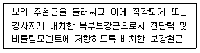
- 주철근
- 온도철근
- 배력철근
- 스터럽
(정답률: 51%)
72. 그림과 같이 인장력을 받는 두 강판을 볼트로 연결할 경우 발생할 수 있는 파괴모드(failure mode)가 아닌 것은?
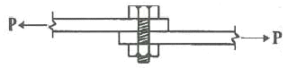
- 볼트의 전단파괴
- 볼트의 인장파괴
- 볼트의 지압파괴
- 강판의 지압파괴
(정답률: 46%)
73. 강도설계법으로 보를 설계할 때 고정하중과 활하중이 각각 80kN/m, 100kN/m이라면, 하중계수 및 하중조합을 고려한 설계하중은?
- 180kN/m
- 214kN/m
- 256kN/m
- 282kN/m
(정답률: 61%)
74. 그림과 같은 리벳 이음에서 허용 전단응력이 70MPa이고, 허용 지압응력이 150MPa일 때 이 리벳의 강도는? (단, 리벳지름 d=22mm, 철판두께 t=12mm)
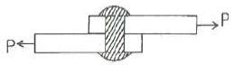
- 26.6kN
- 30.4kN
- 39.6kN
- 42.2kN
(정답률: 53%)
75. 아래 그림과 같은 띠철근 기둥에서 띠철근으로 D10(공칭지름 9.5mm) 및 축방향 철근으로 D32(공칭지름 31.8mm)의 철근을 사용할 때, 띠철근의 최대 수직간격은?
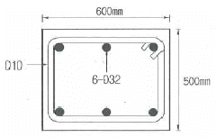
- 450mm
- 456mm
- 500mm
- 509mm
(정답률: 55%)
76. 아래 그림과 같은 T형보에 정모멘트가 작용할 때 다음 설명 중 옳은 것은? (단, fck=24MPa, fy=400MPa, As=5000mm2)
- 등가직사각형 응력블록의 깊이()가 80mm인 복철근보로 설계한다.
- 폭이 1000mm인 직사각형보로 설계한다.
- 폭이 300mm인 직사각형보로 설계한다.
- T형보로 설계한다.
(정답률: 54%)
77. 철근콘크리트 부재 설계에서 강도감소계수(ø)를 사용하는 이유에 해당하지 않는 것은?
- 설계 방정식을 적용 중 계산오차 및 오류에 대비한 여유
- 재료 강도와 치수가 변동할 수 있으므로 부재의 강도 저하 확률에 대비
- 부정확한 설계 방정식에 대비한 여유
- 구조물에서 차지하는 부재의 중요도 등을 반영
(정답률: 41%)
78. bw=400mm, d=600mm인 단철근 직사각형 보에 As=3320mm2인 철근을 일렬로 배치했을 때 직사각형응력블록의 깊이(a)는? (단, fck=21MPa, fy=400MPa)
- 186mm
- 194mm
- 201mm
- 213mm
(정답률: 68%)
79. 아래 그림과 같은 단순보에서 등가직사각형 응력블록의 깊이(a)가 152.94mm이었다면, 최외단 인장철근의 순인장변형률(εt)는? (단, fck=28MPa, fy=400MPa)
- 0.0035
- 0.004
- 0.0045
- 0.0⑤
(정답률: 45%)
80. 경간 ℓ=10m인 대칭 T형보에서 양쪽 슬래브의 중심간격 2100mm, 플랜지의 두께 2100mm, 플랜지가 있는 부재의 복부폭 t=100mm일 때 플랜지의 유효폭은 얼마인가?
- 2000mm
- 2100mm
- 2300mm
- 2500mm
(정답률: 38%)
5과목: 토질 및 기초
81. 미세한 모래와 실트가 작은 아치를 형성한 고리모양의 구조로써 간극비가 크고, 보통의 정적 하중을 지탱할 수 있으나 무거운 하중 또는 충격하중을 받으면 흙구조가 부서지고 큰 침하가 발생되는 흙의 구조는?
- 면모구조
- 벌집구조
- 분산구조
- 단립구조
(정답률: 61%)
82. 다음의 토질 시험 중 투수계수를 구하는 시험이 아닌 것은?
- 다짐시험
- 변수두 투수시험
- 압밀시험
- 정수두 투수시험
(정답률: 58%)
83. 압밀에 걸리는 시간을 구하는데 관계가 없는 것은?
- 배수층의 길이
- 압밀계수
- 유효응력
- 시간계수
(정답률: 54%)
84. 다음 중 얕은 기초는?
- Footing 기초
- 말뚝기초
- Caisson 기초
- Pier 기초
(정답률: 71%)
85. 유선망을 작도하는 주된 목적은?
- 침하량의 결정
- 전단강도의 결정
- 침투수량의 결정
- 지지력의 결정
(정답률: 50%)
86. 절편법에 의한 사면의 안정해석 시 가장 먼저 결정되어야 할 사항은?
- 가상활동면
- 절편의 중량
- 활동면상의 점착력
- 활동면상의 내부마찰각
(정답률: 67%)
87. 다음 중 지지력이 약한 지반에서 가장 적합한 기초 형식은?
- 독립확대기초
- 전면기초
- 복합확대기초
- 연속확대기초
(정답률: 71%)
88. 랭킨 토압론의 가정으로 틀린 것은?
- 흙은 비압축성이고 균질이다.
- 지표면은 무한히 넓다.
- 흙은 입자간의 마찰에 의하여 평형조건을 유지한다.
- 토압은 지표면에 수직으로 작용한다.
(정답률: 48%)
89. 점토 지반에서 직경 30cm의 평판재하시험 결과 30t/m2의 압력이 작용할 때 침하량이 5mm라면, 직경 1.5m의 실제 기초에 30t/m2의 하중이 작용할때 침하량의 크기는?
- 2mm
- 5mm
- 14mm
- 25mm
(정답률: 39%)
90. 흙을 다지면 기대되는 효과로 거리가 먼 것은?(오류 신고가 접수된 문제입니다. 반드시 정답과 해설을 확인하시기 바랍니다.)
- 강도 증가
- 투수성 감소
- 과도한 침하 방지
- 함수비 감소
(정답률: 47%)
91. 흙의 일축압축시험에 관한 설명 중 틀린 것은?
- 내부 마찰각이 적은 점토질의 흙에 주로 적용된다.
- 축방향으로만 압축하여 흙을 파괴시키는 것이므로 σ3=0일 때의 삼축압축시험이라고 할 수 있다.
- 압밀비배수(CU)시험 조건이므로 시험이 비교적 간단하다.
- 흙의 내부마찰각 ø는 공시체 파괴면과 최대 주응력면 사이에 이루는 각 θ를 측정하여 구한다.
(정답률: 46%)
92. 다음 그림에서 점토 중앙 단면에 작용하는 유효압력은?
- 1.2t/m2
- 2.5t/m2
- 2.8t/m2
- 4.4t/m2
(정답률: 52%)
93. 얕은기초의 근입심도를 깊게 하면 일반적으로 기초지반의 지지력은?
- 증가한다.
- 감소한다.
- 변화가 없다.
- 증가할 수도 있고, 감소할 수도 있다.
(정답률: 52%)
94. 전단시험법 중 간극수압을 측정하여 유효응력으로 정리하면 압밀배수 시험(CD-test)과 거의 같은 전단상수를 얻을 수 있는 시험법은?
- 비압밀 비배수시험(UU-test)
- 직접전단시험
- 압밀 비배수시험(CU-test)
- 일축압축시험(qu -test)
(정답률: 60%)
95. 그림과 같은 지반에서 깊이 5m 지점에서의 전단강도는? (단, 내부마찰각은 35°, 점착력은 0이다.)
- 3.2t/m2
- 3.8t/m2
- 4.5t/m2
- 6.3t/m2
(정답률: 59%)
96. 흙의 다짐에 대한 설명으로 틀린 것은?
- 사질토의 최대 건조단위중량은 점성토의 최대건조단위중량보다 크다.
- 점성토의 최적함수비는 사질토의 최적함수비보다 크다.
- 영공기 간극곡선은 다짐곡선과 교차할 수 없고, 항상 다짐곡선의 우측에만 위치한다.
- 유기질 성분을 많이 포함할수록 흙의 최대건조단위 중량과 최적함수비는 감소한다.
(정답률: 40%)
97. 어떤 흙의 습윤단위중량(γt)은 2.0t/m3이고, 함수비는 18%이다. 이 흙의 건조단위중량(γd)은?
- 1.61t/m3
- 1.69t/m3
- 1.75t/m3
- 1.84t/m3
(정답률: 58%)
98. 동수경사(i)의 차원은?
- 무차원이다.
- 길이의 차원을 갖는다.
- 속도의 차원을 갖는다.
- 면적과 같은 차원이다.
(정답률: 68%)
99. rod에 붙인 어떤 저항체를 지중에 넣어 타격관입, 인발 및 회전할 때의 저항으로 흙의 전단강도 등을 측정하는 원위치 시험을 무엇이라 하는가?
- 보링(boring)
- 사운딩(sounding)
- 시료채취(sampling)
- 비파괴 시험(NDT)
(정답률: 72%)
100. 다음 시험 중 흐트러진 시료를 이용한 시험은?
- 전단강도시험
- 압밀시험
- 투수시험
- 애터버그 한계시험
(정답률: 56%)
6과목: 상하수도공학
101. 하천이나 호소에서 부영양화(eutrophication)의 주된 원인 물질은?
- 질소 및 인
- 탄소 및 유황
- 중금속
- 염소 및 질산화물
(정답률: 74%)
102. 유량이 1000m3/day이고 BOD가 100mg/L인 폐수를 유효용량 200m3인 포기조에서 처리할 경우 BOD 용적부하는?
- 0.5kg/m3·day
- 5.0kg/m3·day
- 10.0kg/m3·day
- 12.5kg/m3·day
(정답률: 37%)
103. 도수시설에 관한 설명으로 옳지 않은 것은?
- 수로의 형식은 관수로식과 개수로식이 있지만, 펌프 가압식에서는 관수로식을 채택한다.
- 도수관의 노선은 관로가 항상 동수경사선 이하가 되도록 설정하고 항상 정압이 되도록 계획한다.
- 자연유하식 도수관인 경우에는 평균유속의 최소 한계를 0.3m/s로 한다.
- 수질오염의 관점으로는 개수로가 관수로보다 더 유리하다.
(정답률: 48%)
104. 관거 접합 방법 중 다른 방법에 비해 흐름은 원활 하나 하류의 굴착 깊이가 커지는 접합 방법은?
- 관정접합
- 수면접합
- 관중심접합
- 관저접합
(정답률: 59%)
1⑤. 슬러지의 안정화 목적으로 거리가 먼 것은?
- 병원균의 감소
- 함수율의 감소
- 악취의 제거
- 부패억제, 감소 또는 제거
(정답률: 59%)
106. 유역면적 2km2, 유출계수 0.6인 어느 지역에서 2시간 동안에 70mm의 호우가 내렸다. 합리식에 의한 이 지역의 우수유출량은?
- 10.5m3/s
- 11.7m3/s
- 42.0m3/s
- 70.0m3/s
(정답률: 55%)
107. 다음 중 완속여과지에 비하여 급속여과지의 장점이 아닌 것은?
- 여과속도가 빠르다.
- 부지면적이 적게 소요된다.
- 원수가 고농도의 현탁물일 때 유리하다.
- 주로 미생물에 의한 제거 효과가 뚜렷하다.
(정답률: 56%)
108. 상수를 처리한 후에 치아의 충치를 예방하기 위해 주입할 수 있으며 원수 중에 과량으로 존재하면 반상치(반점치) 등을 일으키므로 제거하여야 하는 물질은?
- 염소
- 불소
- 산소
- 비소
(정답률: 71%)
109. 우수관거 및 합류관거의 최소 관경(A)과 관거의 최소 흙두께(B)로 옳게 짝지어진 것은?
- A=200mm, B=0.5m
- A=250mm, B=1m
- A=200mm, B=1m
- A=250mm, B=0.5m
(정답률: 57%)
110. 그림과 같은 활성슬러지 변법은?
- 계단식폭기법
- 장기폭기법
- 접촉안정법
- 산화구법
(정답률: 71%)
111. 분류식과 합류식 하수 배제방식의 특징으로 틀린것은?
- 일반적으로 합류식의 관경이 분류식보다 크다.
- 분류식은 우수관과 오수관으로 구분된다.
- 합류식은 초기 우수의 일부를 처리장으로 운송하여 처리한다.
- 분류식은 완전한 우수처리가 가능하다.
(정답률: 56%)
112. 다음 중 BOD 값이 크게 나타나는 경우는?
- 영양염류가 풍부한 경우
- DO 농도가 큰 경우
- 유기물질이 많은 경우
- 미생물이 활성화 되어 있는 경우
(정답률: 52%)
113. 계획취수량 결정에 대한 설명으로 옳은 것은?
- 계획1일평균급수량에 10% 정도 증가된 수량으로 결정한다.
- 계획1일최대급수량에 10% 정도 증가된 수량으로 결정한다.
- 계획1일평균급수량에 30% 정도 증가된 수량으로 결정한다.
- 계획1일최대급수량에 30% 정도 증가된 수량으로 결정한다.
(정답률: 61%)
114. 관거별 계획하수량을 결정할 때 고려하여야 할 사항으로 틀린 것은?
- 오수관거는 계획시간최대오수량으로 한다.
- 우수관거는 계획우수량으로 한다.
- 합류식 관거는 계획1일최대오수량에 계획우수량을 합한 것으로 한다.
- 차집관거는 우천시 계획오수량으로 한다.
(정답률: 50%)
115. 펌프에 연결된 관로에서 압력강하에 따른 부압발생을 방지하기 위한 방법이 아닌 것은?
- 펌프에 플라이휠(fly-wheel)을 붙여 펌프의 관성을 증가시켜 급격한 압력강하를 완화한다.
- 펌프 토출측 관로에 조압수조(conventional surge tank)를 설치한다.
- 압력수조(air-chamber)를 설치한다.
- 관내 유속을 크게 한다.
(정답률: 67%)
116. 하수관거의 길이가 1.8km인 하수관거 내에서 우수가 1.5m/s의 유속으로 흐르고, 유입시간이 8분일 때 유달시간은?
- 18분
- 20분
- 28분
- 38분
(정답률: 58%)
117. 취수시설 중 취수탑에 대한 설명으로 틀린 것은?
- 큰 수위변동에 대응할 수 있다.
- 지하수를 취수하기 위한 탑 모양의 구조물이다.
- 취수구를 상하에 설치하여 수위에 따라 좋은 수질을 선택하여 취수할 수 있다.
- 유량이 안정된 하천에서 대량으로 취수할 때 유리하다.
(정답률: 57%)
118. BOD가 94.8mg/L인 오수 5m3/h를 유량이 50m3/h인 하천에 방류한 결과 BOD가 14.1mg/L가 되었다. 오수가 유입되기 이전의 하천 BOD는?
- 2.0mg/L
- 4.0mg/L
- 6.0mg/L
- 8.0mg/L
(정답률: 47%)
119. 파괴점염소처리(또는 불연속점염소처리)에 대한 설명 중 틀린 것은?
- 염소를 주입하여 생성된 클로라민을 모두 파괴하고 유리잔류염소로 소독하는 방법이다.
- 파괴점(breakpoint)은 염소요구량이 소비되고 나서 유리잔류염소가 존재하기 시작하는 점을 말한다.
- 유리잔류염소는 살균력이 강하여 소독효과를 충분히 달성할 수가 있다.
- 파괴점염소소독을 할 경우 THM 등의 소독부산물 생성을 방지할 수 있다.
(정답률: 59%)
120. 송수관을 자연유하식으로 설계할 때, 평균유속의 허용최대한계는?
- 1.5m/s
- 2.5m/s
- 3.0m/s
- 5.0m/s
(정답률: 71%)
트러스 해법에서의 가정은 다음과 같다.
1. 모든 부재는 직선이다.
2. 모든 부재는 마찰이 없는 핀으로 양단이 연결되어있다.
3. 외력의 작용선은 트러스와 동일 평면 내에 있다.
4. 집중하중은 절점에 작용시키고, 분포하중은 부재 전체에 분포한다.
따라서, "집중하중은 절점에 작용시키고, 분포하중은 부재 전체에 분포한다."가 틀린 것은 아니다. 이 가정은 트러스 해법에서 중요한 역할을 하며, 트러스 구조의 해석에 필수적이다.